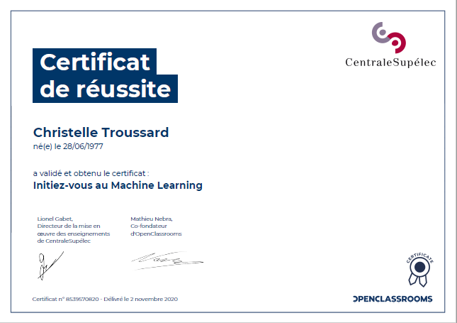
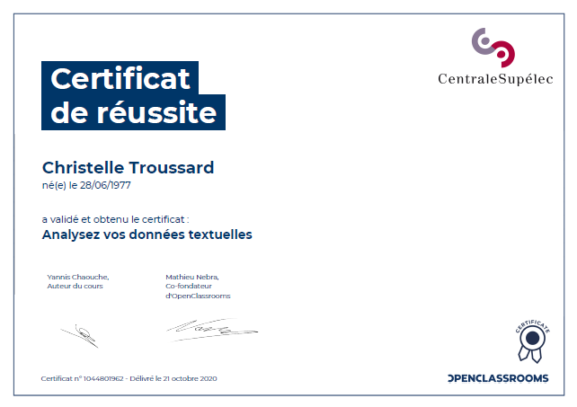
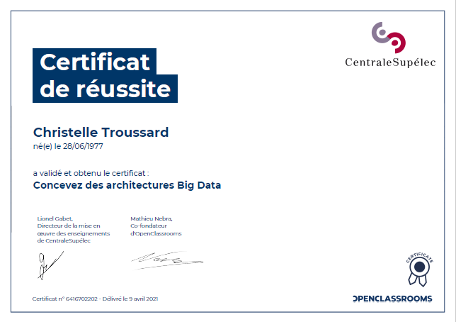
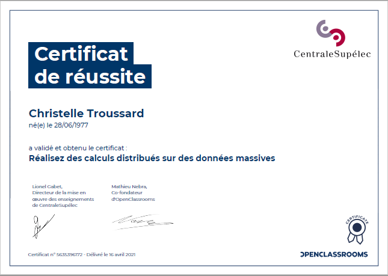

Cours OpenClassRooms - Certificats Centrale Supélec Les certifications des cours suivis chez OpenClassRooms et délivrés par Centrale Supélec.  DATA - Initiez-vous au Machine Learning  DATA - Analysez vos données textuelles DATA - Evaluez les performances d'un modèle de machine learning DATA - Entraînez un modèle prédictif linéaire  DATA - Concevez des architectures Big Data  DATA - Réalisez des calculs distribués sur des données massives